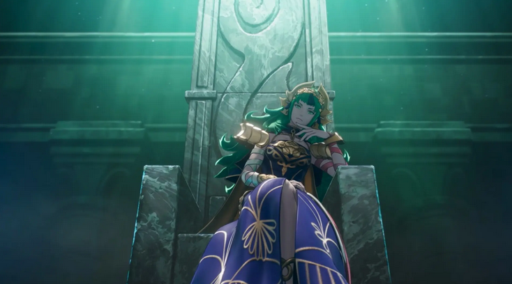

Inicio
Reparación de Notebooks
Reparación de Mac
Servicio Técnico
Blog
Contacto
Blog Ratafix
Mantente informado de las noticias mas actuales de ahora!
Noticia 1:
Avatar: Frontiers of Pandora recibirá DLC llamado From the Ashes
Click aqui para seguir leyendo...
Noticia 2:
2XKO por fin iniciará su temporada 0 y estará disponible gratis para todos en octubre, pero hay una mala noticia para los jugadores de consolas
Click aqui para seguir leyendo...
Noticia 3:
Sonic Racing CrossWorlds arranca con éxito en Steam y prepara su llegada a consolas
Click aqui para seguir leyendo...
Noticia 4:
PlayStation ahora permitirá comprar mercancía exclusiva con los trofeos de sus juegos: fans que tengan el Platino de Ghost of Tsushima podrán adquirir estos geniales productos
Click aqui para seguir leyendo...
Noticia 5:
Este es el calendario actualizado de estrenos para Nintendo Switch 1 y 2 para lo que resta de 2025 y en 2026
Click aqui para seguir leyendo...

Noticia 6:
Este juego de Steam tenía malware y robó miles de dólares en criptomonedas a jugadores y streamers
Click aqui para seguir leyendo...
Noticia 7:
“Es como Death Stranding en el mundo real”: Hideo Kojima trabaja en un juego de realidad aumentada con el estudio de Pokémon GO
Click aqui para seguir leyendo...
Noticia 8:
Stardew Valley: Concerned Ape confirma que la versión 1.7 está en camino, pero pide paciencia
Click aqui para seguir leyendo...